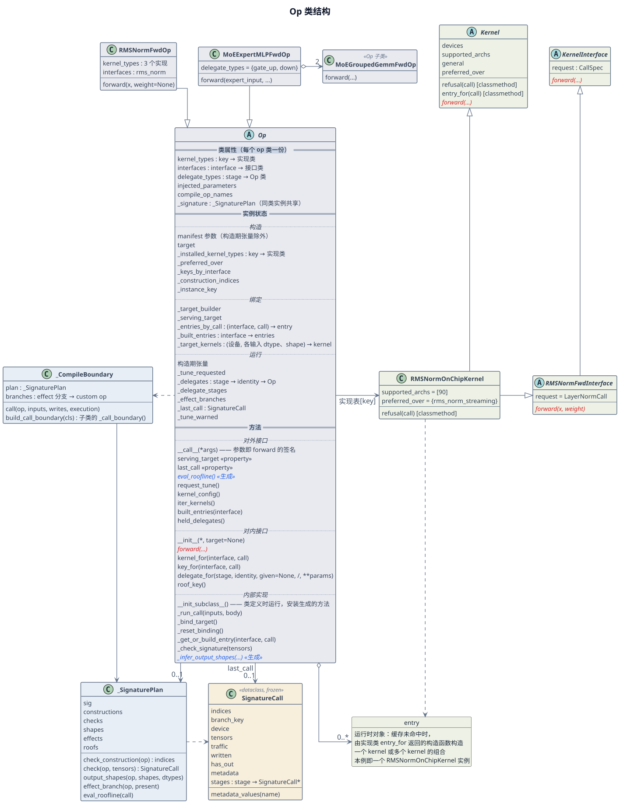

类结构与实例状态¶
本页说明：
Op基类与相关类的结构；- 实例状态的分组；
- 新增 op、target、kernel 实现或基类字段时，基类保证什么。
读者是修改 Op 基类、_signature_codegen.py 或 compile_boundary.py 的开发者。
1. 类结构¶

图 1 Op 及相关类的结构，只列出部分成员。
图例：
- 实线箭头表示引用，空心菱形表示持有，虚线箭头表示依赖，空心三角表示继承；
- 红色斜体是子类必须手写的抽象方法；蓝色斜体并标「«生成»」的，是
Op上的抽象方法，由生成代码为有 manifest 条目的类实现，子类不写；其中eval_roofline()只在条目提供roofline字段时生成；斜体的类名表示抽象类； - 背景色按层区分：蓝灰为 op 层（
Op及其子类），浅蓝为代码生成（_SignaturePlan、_CompileBoundary），米色为调用记录（SignatureCall），浅绿为 kernel 层（kernel 基类、接口、实现类与 entry）； - 没有图标的方框（entry）是运行时对象，不是类；标「«Op 子类»」的类继承
Op，为避免连线拥挤，没有画继承箭头；标「«property»」的成员是只读属性，按属性读取，不加括号调用； Op框分三大块，以双线与加粗标题分隔：类属性、实例状态、方法。大块内再以虚线与斜体小标题分组：实例状态按表 2 分为构造、绑定、运行三组；方法按索引页 § 基类的成员分为对外接口、对内接口、内部实现三层。
表 1 主要基类的职责
| No. | 类 | 可见性 | 负责 | 详见 |
|---|---|---|---|---|
| 1 | Op |
公开 | op 的生命周期：构造时检查参数并安装实现表；每次调用时检查签名、选择 target、取得 kernel、保存记录、失败时撤销；持有子 op | 构造与调用、组合 op |
| 2 | SignatureCall |
公开，只读 | 一次通过签名检查的调用的记录，调用方按只读对象使用（stages 在记录成为 last_call 之前写入）：index 值、张量的 shape 与 dtype、读写量、子 op 的调用；last_call 与 roofline 读它 |
调用记录与调优 § last_call |
| 3 | KernelInterface |
公开 | 一个 kernel 接口的调用契约：call spec 的类型与 forward 的参数；同一接口的实现都继承它 |
op 如何选择 kernel |
| 4 | Kernel |
公开 | kernel 实现的基类：声明在哪些设备上可用（devices、supported_archs）、服务哪些调用（refusal）、与其他实现的优先关系（general、preferred_over），并经 entry_for 提供构造函数 |
op 如何选择 kernel |
| 5 | _SignaturePlan |
内部 | 一个 op 类的 manifest 签名生成的函数表：构造检查、调用检查、输出 shape 推导、effect 分支、roofline 求值；同类实例共享 | 构造与调用 § 一次调用的七步 |
| 6 | _CompileBoundary |
内部 | 为有编译边界的 op 类注册 custom op，生成 _call_boundary，使 op 在 torch.compile 中是图里的一个节点 |
构造与调用 § 调用入口 |
可见性按 Python 的约定：名字以下划线开头的是非公开成员，只由基类与生成代码使用，子类既不调用也不实现；SignatureCall 定义在私有模块 _signature_codegen.py 中，调用方通过 op.last_call 取得它的实例。
图中各类的关系：
- 类定义时：
__init_subclass__安装 manifest 条目生成的签名方法与编译边界，并记下 target 的 builder 使用的 manifest 参数名。- 没有 manifest 条目的类不安装签名方法，参数名为空元组。
- 实例构造时，
Op.__init__再运行构造检查。
_SignaturePlan： 每个有 manifest 条目的类持有_signature，即该类所有实例共享的_SignaturePlan。- 它在某个构造点第一次被用到时，生成这个点的检查函数并缓存在自身。
- 这些缓存只取决于 manifest。
_CompileBoundary： 为每个 effect 分支注册一个 custom op，并生成_call_boundary()。- 分支由写入的输入、是否传入
out与返回的输出共同决定。 - custom op 本体按实例登记的 key 找回实例，调用
Op._run_call()。
- 分支由写入的输入、是否传入
- entry 与实现类： entry 由选中的实现类构造。实现类同时继承
Kernel和某个 kernel 接口，例如RMSNormOnChipKernel继承Kernel与RMSNormFwdInterface。
2. 实例状态¶
实例状态按字段的行为分组：同一组的字段在撤销 target 选择时受同样的处理，具体写入时机可以不同。判断一个字段属于哪一组，只需要回答两个问题：
- 它依不依赖这次调用选定的 target？依赖，属于绑定组，撤销 target 选择时重置。
- 不依赖的字段撤销时都保留，再看它在构造之后还会不会被写：不会，属于构造组；会，属于运行组。
绑定组的三个缓存虽然在构造时就建成空表，但它们的内容依赖选定的 target，所以属于绑定组。
表 2 实例状态
| No. | 组 | 何时写入 | 撤销 target 选择时 | 字段 |
|---|---|---|---|---|
| 1 | 构造 | 构造时，之后不再写 | 保留 | manifest 参数（构造期张量除外）、target、_installed_kernel_types、_preferred_over、_keys_by_interface、_construction_indices、_instance_key |
| 2 | 绑定 | 选定 target、构造 kernel 时 | 重置为初值 | _target_builder、_serving_target、_entries_by_call、_built_entries、_target_kernels |
| 3 | 运行 | 构造之后仍会写入 | 保留 | 构造期张量、_tune_requested、_delegates、_delegate_stages、_effect_branches、_last_call、_tune_warned |
表 2 的补充说明：
- 构造组： 由构造函数与
Op.__init__写入。不声明自己 kernel 的组合 op 不建立_installed_kernel_types、_preferred_over、_keys_by_interface，读取类属性上的空映射。 - 绑定组： 构造时建成空表或取类属性初值，初值见表 3；调用的第 4、5 步写入，见构造与调用 § 一次调用的七步；撤销时
_reset_binding重置为初值，见构造与调用 § 失败与撤销。 - 运行组：
_tune_requested初值为False，只由request_tune()改为True；_effect_branches由 manifest、这个实例的构造参数与调用中可选输入是否出现决定，不依赖选定的 target；- 构造期张量（例如
LongRoPEFwdOp的rescale_factors）在调用时若与调用的设备或 dtype 不一致，会被转换后写回实例； _tune_warned记住调优警告已经发过，同一实例只警告一次。
绑定组与运行组的关系
两组都在调用中写入，区别只在内容依不依赖这个实例选定的 target：
- 绑定组是「这次选了哪个 target，以及为它构造了什么」：选定的 target、它的 builder、在它之下构造并缓存的 kernel。它们只在这个 target 被选定的前提下成立，所以选定 target 的那次调用失败时，
_reset_binding把整组重置为初值，下一次调用重新选择、重新构造。 - 运行组是「调用中积累、与选哪个 target 无关的东西」：持有的子 op、effect 分支缓存、上一次成功调用的记录、调优模式与警告标记。换一个 target 它们依然成立，所以撤销时保留。
两组之间有三处交互：
- 撤销沿运行组里的子 op 向下传。 组合 op 撤销时，对
_delegates中的每个子 op 也调用_reset_binding：父 op 继续持有子 op，每个子 op 重置自己的绑定组。 - 运行组的调优模式决定绑定组如何构造。 实例处于调优模式时，绑定组中新构造的 kernel 构造后立即进入调优模式；
request_tune()置_tune_requested，并向iter_kernels()枚举到的已构造 kernel 发出调优请求。target 构造的 kernel 不在其中，调优请求到不了 target 时发出警告。 - 撤销不影响上一次成功的记录。 target 在失败的这次调用中选定时，绑定组被重置；无论是否撤销，失败的调用都不写
_last_call，last_call仍然指向之前那次成功的调用。
表 3 绑定组字段
| No. | 字段 | 内容 | 初值 |
|---|---|---|---|
| 1 | _target_builder |
• 选定 target 的 builder • None 表示 in-tree kernel |
类属性默认值 _UNRESOLVED，表示尚未选定 |
| 2 | _serving_target |
选定的 target 名，serving_target 属性读取它 |
类属性默认值 None |
| 3 | _entries_by_call |
(interface, call) 到 entry 的缓存，命中只需一次查表 |
Op.__init__ 安装实现表时建立的空表 |
| 4 | _built_entries |
每个接口下按 (实现类, identity) 保存的 entry，built_entries 读取它 |
Op.__init__ 安装实现表时建立的空表 |
| 5 | _target_kernels |
• target 构造的 kernel，按设备与每个输入的 dtype、shape 保存 • 未传入的可选输入单独占位 |
Op.__init__ 建立的空表 |
基类的方法读写这些字段时，不判断字段是否存在，因为构造之后它们都存在：
- 绑定组的三个缓存字段，与运行组的
_delegates、_delegate_stages、_effect_branches，由Op.__init__建立； _target_builder与_serving_target有类属性初值。
3. 新增内容时基类的保证¶
新增 op、组合 op、target 或 kernel 实现时，基类的保证不变。表 4「需要做的」一列列出接入基类要做的事；新增 op 的完整步骤（测试、benchmark、注册等）见添加一个新 op。
表 4 新增内容与基类的保证
| No. | 新增 | 需要做的 | 基类保证 |
|---|---|---|---|
| 1 | 有编译边界的 op | • 同名的 manifest 条目，条目有调用期张量输入，且没有 composition • 通过 fullgraph=True 的冷编译• 运行自己的 kernel 时，声明 kernel_types 与 interfaces• 构造函数、 forward• 登记冷编译测试 |
检查、target 选择、记录和失败处理由 _run_call 完成 |
| 2 | 没有编译边界的 op | • 同名的 manifest 条目 • 运行自己的 kernel 时，声明 kernel_types 与 interfaces• 构造函数、 forward |
同上 |
| 3 | 组合 op | delegate_types，每个子 op 经 delegate_for 持有 |
每个子调用归入一个 stage，否则报错 |
| 4 | target | 为 op 注册 builder | 与 in-tree kernel 经过相同的检查、记录和失败处理 |
| 5 | kernel 实现 | • 按如何为 op 新增 kernel同时继承 Kernel 与 kernel 接口、注册• 需要时覆盖默认的 refusal、entry_for 与优先关系 |
• 不改 op • entry 按 (实现类, identity) 缓存 |
| 6 | 基类状态字段 | • 在 Op.__init__ 中建立，或给出类属性初值• 属于绑定组时，加入 _reset_binding 的重置清单 |
• 字段在构造后始终存在 • 撤销 target 选择时不残留 |